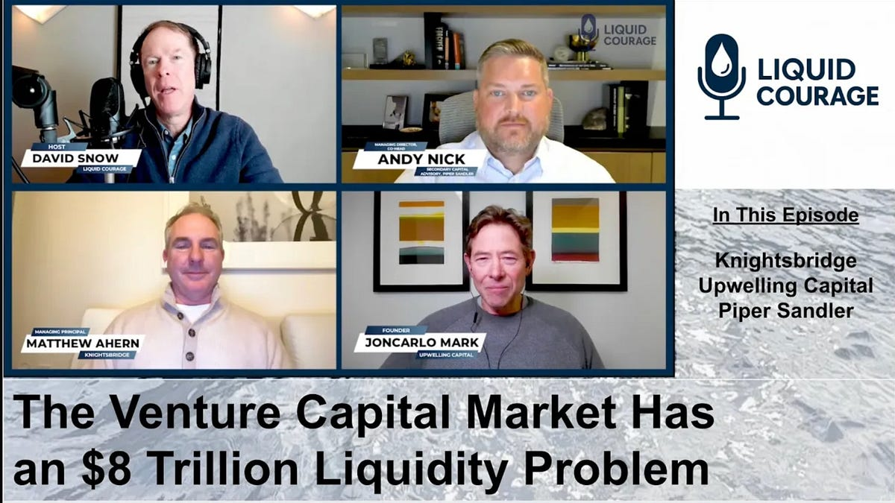

Liquid Courage is a video-podcast presenting thought leadership and research on the global private capital secondaries markets. On a regular basis, Liquid Courage convenes expert conversations about the investment opportunities and macro themes driving the secondaries market, including GP-led transactions, continuation vehicles, LP portfolio management, and the evolving role of secondaries across private equity and private credit.
Liquid Courage is hosted by financial journalist David Snow, a long-time chronicler of the alternative investment market.